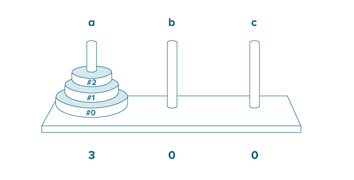
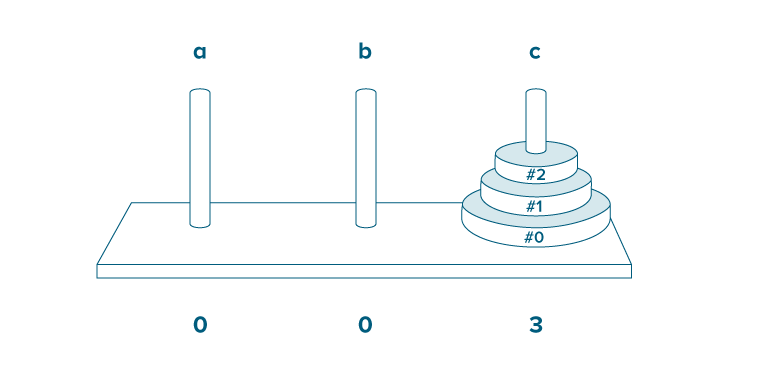
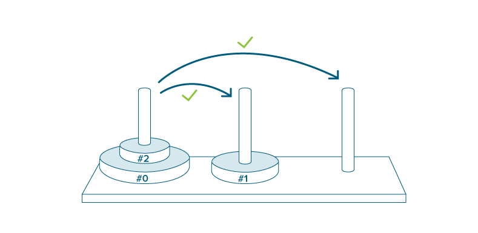
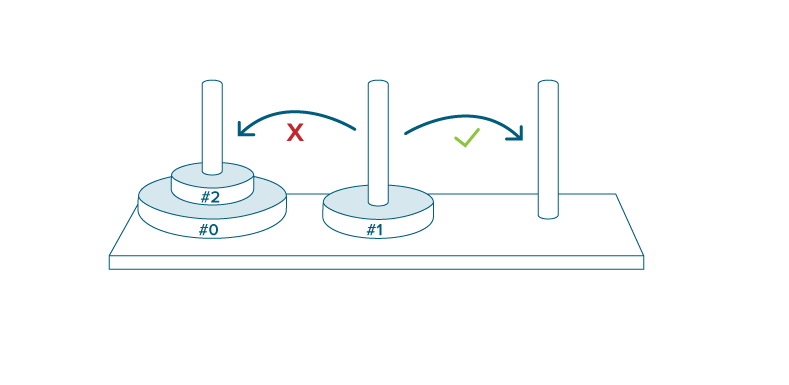
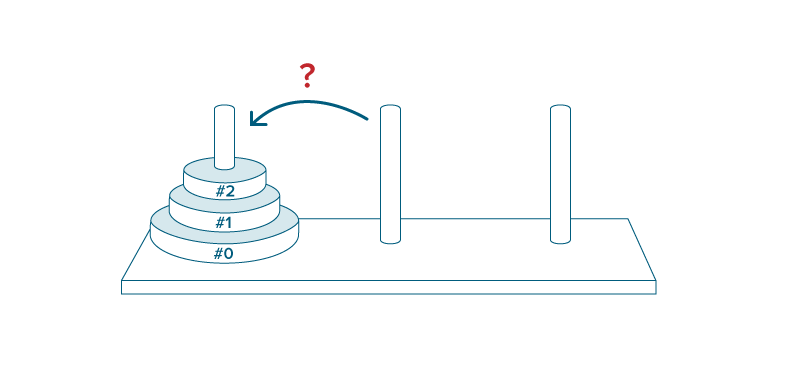

Der Prozess der Software-Entwicklung ist häufig ein sehr langwieriger und schwieriger Prozess. Bekanntermaßen ist es sehr wahrscheinlich, dass die während der Entwicklung geschriebenen Programme zunächst irgendwelche Fehler aufweisen. Dies liegt einerseits an der Komplexität des Programmentwicklungsprozesses, also an der Schwierigkeit, Lösungsideen zu entwickeln und in Programme umzusetzen, andererseits an der geforderten hohen Präzision mit der Programme aufgeschrieben werden müssen.
Hat man zu einem Problem ein Programm erstellt, so muss man überprüfen, ob das Programm _korrekt_ arbeitet, also zu jedem zulässigen Eingabewert die gewünschte Ausgabe liefert. Um mit formalen Mitteln zu beweisen, dass ein Programm fehlerfrei ist (Verifikation), benötigt man ein formale Semantikdefinition der zugrundeliegenden Programmiersprache. Diese liegt für die meisten Programmiersprachen nicht vor. Überdies erfordert die Verifikation einen relativ großen technischen Aufwand und setzt spezielle Kenntnisse voraus. Daher begnügt man sich häufig mit einer sehr einfachen Form der Verifikation, dem Testen.
Beim Testen beschränkt man sich im Gegensatz zur Verifikation auf eine endliche Teilmenge (Testmenge) der meist unendlich großen Menge an möglichen Eingabewerten. Wenn das Programm für diese Menge korrekt arbeitet, dann schließt man daraus dass es wohl auch für alle übrigen Eingabewerte korrekt ist. Durch Testen kann somit immer nur die Anwesenheit von Fehlern, nie jedoch deren Abwesenheit bewiesen werden.
Wichtige Prinzipien für die Konstruktion von Testmengen sind die Verwendung vonEine sehr wichtige und häufig unterschätzte Problematik beim Testen ist die Testplanung und damit die vorherige Definierung der Korrektheitsanforderungen. Wenn man erst "testet" und dann festlegt, welches die Korrektheitskriterien sind, dann hat man vermutlich schon einen Fehler während der Entwicklung gemacht. Da der Programmierer in erster Linie daran interessiert ist, _keine_ Fehler zu finden, sollte der Test möglichst von einer fremden Person durchgeführt werden.
Dies bedeutet, dass zumindest einige Testfälle dem Programmierer schon mit den Anforderungen bekannt sein müssten oder aus den Anforderungen abgeleitet werden können. Um sich selbst zu überprüfen und schneller Rückmeldungen über den eigenen Entwicklungsstand zu bekommen, hat ein Programmierer die Möglichkeit automatische Tests zu schreiben, die Teile seines Programmcodes auf Korrektheit von Ein- und Ausgabe prüfen. Diese Tests können je nach Präferenz jederzeit automatisch ausgeführt werden - z.B. einmal täglich, einmal stündlich oder sobald sich eine Datei des Quellcodes ändert.
In vielen Fällen hat sich herausgestellt, dass Programmierer oft effizienter arbeiten, wenn die Tests möglichst häufig durch das Testrunner-Programm ausgeführt werden. Sollte einer der Tests fehlschlagen, der vorher problemlos durchlief, dann weiß der Programmierer noch, welche Änderungen er zuletzt gemacht hat, die jetzt die Ursache für den Fehler sein muss.
Viele Programmierer berichten auch von positiven Effekten, die die Testgetriebene Programmierung auf die Entwicklung hat. Bei der Testgetriebenen Entwicklung (TDD) schreibt der Programmierer nicht nur Tests, er schreibt sie sogar noch bevor er die zu testenden Teile der Software schreibt. Um genau zu sein, schreibt er immer zuerst einen oder zwei Tests und implementiert dann den Programmcode, der dafür zuständig ist, dass diese Tests fehlerfrei durchlaufen. Sobald dies der Fall ist, schreibt er wieder einen Test, der üblicherweise zuerst fehlschlägt und implementiert dann den Programmcode der notwendig ist um den Test fehlerfrei durchlaufen zu lassen. Wegen der häufig anzutreffenden Visualisierung in den Farben Rot und Grün, spricht man auch von "roten" (fehlschlagenden) und "grünen" (fehlerfreien) Tests.
Es gibt mehrere Studien zu den Auswirkungen von TDD auf Softwareprojekte. In vielen universitären Forschungen wurden kleinere Projekte testgetrieben und ohne festgelegten Entwicklungsprozess durchgeführt und anschließend miteinander verglichen. Die dabei herausgefundenen Unterschiede zwischen den verschiedenen Ansätzen waren allerdings nicht besonders aussagekräftig. Wesentlich positiver waren die Studien der Industrie von IBM und Microsoft, die verschiedene vergleichbare Softwareprojekte miteinander verglichen. Diese Studien fanden durch Analyse von Fehlerdatenbanken heraus, dass die Fehlerdichte eines Softwareproduktes mit Hilfe von TDD um 40–90% niedriger ausfallen konnte als die eines vergleichbaren Produktes des gleichen Herstellers ohne TDD und damit den Aufwand zur Pflege des Produktes wesentlich minderte. Der dabei anfallende zeitliche Mehraufwand wurde auf 15-35% geschätzt. Die Studien stellte allerdings auch fest, dass dieser Mehraufwand in der Entwicklungszeit später durch die reduzierten Wartungskosten wegen besserer Software Qualität wettgemacht wird.Kent Beck, der Author der ersten OpenSource Testframeworks SUnit (Smalltalk) und JUnit (Java) begründete mit diesen beiden Frameworks die Familie der xUnit Testing Frameworks, die mittlerweile für fast jede Programmiersprache erhältlich ist. Der Stil dieser Tests ist relativ einfach und zeichnet sich dadurch aus, dass mit Hilfe der assert-Funktionen erwarteten Wert mit dem wirklichen Rückgabewert einer Funktion verglichen wird. Entspricht der Rückgabewert dem Erwartungswert, dann ist der Test grün.
Um die Entwicklung zu vereinfachen, gibt es außer der assert Methode meist auch jede Menge davon abgeleiteter Funktionen, die bestimmte Eigenschaften des übergebenen Wertes prüfen oder erwartete Ausnahmen abfangen und so die Ausdrucksähigkeiten und Lesbarkeit der Tests erhöhen.
Hier ein einfaches Beispiel in Ruby, bei dem das Test/Unit Modul benutzt wird. Dieser Test läuft fehlerfrei durch und die Ausgabe gibt eine Statistik und eventuelle Fehler aus.
require 'test/unit'
# Tests müssen von der Klasse Test::Unit::TestCase erben
class TestCalculation < Test::Unit::TestCase
# Testfunktionen müssen mit test_ anfangen
# wir nennen unseren Test test_simple_addition
def test_simple_addition
# Annahme: 1+1 ist gleich 2
assert_equal( 1+1, 2 )
end
end
Der Vergleich von Eigenschaften durch assert ist ziemlich einfach zu verstehen und anzuwenden, allerdings erkannten Programmierer mit der Zeit einige Limitierungen des xUnit-Ansatzes. Drei der Probleme, die beim xUnit-Ansatz auftreten, möchte ich hier erläutern:
Der Name einer Testfunktion dient der Dokumentation und ist wichtig für die Ausgabe des Testrunners. Allerdings lässt es die gleichzeitige Verwendung als Funktionsnamen nicht zu, Leerzeichen oder Sonderzeichen zu benutzen. Dieser Umstand verhindert, dass der Entwickler besonders aussagekräftige Kommentare für Tests schreiben kann und mindert den Wert der Testrunner-Ausgabe z.B. für Dokumentationszwecke.
Tests müssen von der TestCase Klasse erben. Da die meisten objektorientierten Programmiersprachen nur einfache Vererbung zulassen, bedeutet das, dass Tests nicht von einer anderen Klasse erben können. Der Entwickler muss an dieser Stelle die Kontrolle über seine Klassen abgeben.
Der xUnit-Stil mit assert ist eher ein prozeduraler Programmierstil als ein objektorientierter. Da die Programmiersprachen sich aber mehr der Objektorientierung zugewandt haben, wurde in den letzten Jahren versucht, auch Tests in einem objektorientierten Stil zu schreiben um so eine höhere Ausdrucksfähigkeit zu erreichen.
Diesen neuen Stil - testgetrieben zu programmieren, aber dabei mehr das Verhalten von Objekten als die Rückgabewerte von Funktionen zu beschreiben - nennt man Behaviour Driven Development (BDD). Wir wollen versuchen, mittels RSpec, einer BDD-Implementation in Ruby, ein Model des Spiels "Turm von Hanoi" zu entwickeln.
Das Spiel besteht aus drei Stäben A, B und C, auf die mehrere gelochte Scheiben gelegt werden, alle verschieden groß. Zu Beginn liegen alle Scheiben auf Stab A, der Größe nach geordnet, mit der größten Scheibe unten und der kleinsten oben. Ziel des Spiels ist es, den kompletten Scheiben-Stapel von A nach C zu versetzen.
Bei jedem Zug darf die oberste Scheibe eines beliebigen Stabes auf einen der beiden anderen Stäbe gelegt werden, vorausgesetzt, dort liegt nicht schon eine kleinere Scheibe. Folglich sind zu jedem Zeitpunkt des Spieles die Scheiben auf jedem Feld der Größe nach geordnet.
Turm von Hanoi auf WikipediaMeistens wird "Turm von Hanoi" als Beispiel für rekursive Programmierung benutzt. Beispiele für rekursive Algorithmen zur Lösung finden sich dabei auf der oben genannten Wikipedia Seite. Bei der Implementierung dieser Algorithmen im Schulunterricht wird aber meist nur eine Textausgabe erzeugt, die manuell auf Korrektheit überprüft werden muss. Es existiert dabei keine Sperre, die verhindern würde, dass das Programm unter Umständen falsche Ausgaben produziert. Außerdem ist nicht ohne größere Änderungen möglich, statt dem Computer einen Menschen spielen zu lassen.
Wir wollen stattdessen im Sinne von Objektorientierter Programmierung mit Hilfe von Testgetriebener Entwicklung eine Klasse Hanoi entwickeln, die den gesamten Zustand eines Hanoi Spiels kapselt. Über die Methoden der Klasse Hanoi sollen dann ein Algorithmus oder eine grafische Benutzeroberfläche diesen Zustand beeinflussen können. Gleichzeitig sollte es nicht möglich sein, einen inkonsistenten Zustand herbeizuführen.
Um sicher zu stellen, dass wir die Erklärung der Regeln verstanden haben, fertigen wir einige Skizzen an. Diese werden uns später auch helfen, unsere Testfälle besser zu verstehen.
So sieht der Aufbau von Turm von Hanoi zu Beginn aus. Alle Scheiben befinden sich auf dem Stab A. Die Scheiben sind von der untersten/größten Scheibe zur obersten/kleinsten Scheibe durchnummeriert. Die gleiche Nummerierung werden wir auch in unserem Programm benutzen.
Ziel des Spiels von Turm von Hanoi ist es, alle Scheiben auf dem Stab C zum Liegen zu bekommen. Natürlich sollen sie auch dort der Größe nach geordnet sein.
Die Regeln besagen, dass man eine Scheibe entweder auf einen leeren Stab oder auf eine größere Scheibe legen darf.
Eine Scheibe auf eine kleinere Scheibe zu legen ist verboten.
Wir wollen Hanoi mit Hilfe Testgetriebener Programmierung in Ruby programmieren. Dazu werden wir abwechselnd einen Test schreiben und unseren Produktionscode implementieren.
Dazu werden wir RSpec verwenden. Im Gegensatz zu den allgemein mit TDD assoziierten Test-Frameworks der xUnit Familie, handelt es sich bei RSpec um ein Framework für sogenanntes Behaviour Driven Development (Verhaltensgetriebene Entwicklung, BDD).
Dabei ist BDD prinzipiell der gleiche Prozess wie TDD und die Unterschiede sind eher semantischer Natur. Bei BDD liegt der Fokus mehr auf dem Verhalten der Komponenten als auf dem korrekten Rückgabewert von Funktionen. Insbesondere verbessert ein BDD-Framework die Lesbarkeit der Tests und hilft so, Verständnisprobleme zwischen Entwickler und Kunden zu verringern und den Entwicklungsprozess nach der Anforderungsanalyse zu unterstützen.
Um einen möglichst schnellen Turn-around zwischen Test scheiben und Entwicklung zu erzielen, starten wir in der Terminal-Konsole die automatischen Tests mit bundle exec guard. Wenn wir in unserem Texteditor jetzt eine neue Änderung mit CMD + s speichern, werden automatisch alle Tests in der entsprechenden Datei ausgeführt. Haben wir sowohl Editor als auch Terminal im Blick, sehen wir also sofort die Auswirkungen jeder einzelnen Änderung.
Wir wollen möglichst einfach ein neues Spiel starten können. Danach sollen auf dem Stab A 3 Scheiben liegen und die Stäbe B und C sollen leer sein.
Um das möglichst einfach in Ruby auszudrücken, benutzen wir für die einzelnen Stäbe die Symbole :a, :b und :c. Da unsere Programmiersprache ein sehr vereinfachtes Englisch darstellt, werden wir auch alle Elemente in unserem Programm und die Kommentare englisch beschriften.
Fangen wir erstmal einfach an.
describe Hanoi do
it "is possible to start Hanoi" do
Hanoi.new
end
end
Die Terminal-Ausgabe sollte jetzt einen Fehler anzeigen. Bitte nicht verzweifeln, wenn das alles sehr kryptisch aussieht, irgendwo wird der Fehler schon halbwegs lesbar beschrieben sein:
hanoi_spec.rb:1: uninitialized constant Hanoi (NameError)
Ruby kennt anscheinend Hanoi nicht, was aber auch nicht weiter verwunderlich ist, schließlich haben wir nirgendwo geschrieben, was Hanoi eigentlich ist.
Wir fügen vor den bisherigen Code einfach folgende Zeilen ein:
class Hanoi
end
Damit haben wir eine Klasse Hanoi definiert, die wir jetzt weiter unten benutzen. Und wir werden prompt dafür belohnt, denn unsere automatische Testausgabe zeigt jetzt folgendes:
Running: spec/hanoi_spec.rb
.
Finished in 0.00055 seconds
Der Punkt zeigt dabei an, dass unser Test wunderbar durchgelaufen ist. Jeder Test entspricht einem Punkt und je mehr Tests fehlerfrei funktionieren, um so mehr Punkte werden wir in der Ausgabe sehen.
Ok, wir sehen, dass wir ein neues Spiel starten können, aber in unserer Beschreibung fehlt noch die Prüfung, dass die Scheiben dann alle auf dem Stab A (englisch rod)liegen und die Stäbe B und C leer sind. Das wollen wir jetzt testen:
it "has only discs on rod A after starting" do
hanoi = Hanoi.new
hanoi.rod(:a).should_not be_empty
hanoi.rod(:b).should be_empty
hanoi.rod(:c).should be_empty
end
Um von unserem Hanoi-Spiel an die einzelnen Stäbe heranzukommen, haben wir uns überlegt, dass wir die Methode rod mit dem entsprechenden Symbol aufrufen wollen. Und diese Stäbe sollen dann entweder leer (empty) oder eben nicht leer sein. Die Methoden should und should_not stellt uns dabei RSpec zur Verfügung.
Hätten wir das nur nicht geschrieben! Ruby kennt natürlich kaum etwas davon und die Fehlermeldung sagt uns aus, was alles falsch ist:
Running: spec/hanoi_spec.rb
.F
Failures:
1) Hanoi has only discs on rod A after starting
Failure/Error: hanoi.rod(:a).should_not be_empty
NoMethodError:
undefined method `rod' for #<Hanoi:0x101581d10>
# ./spec/hanoi_spec.rb:14
Finished in 0.00085 seconds
2 examples, 1 failure
Failed examples:
rspec ./spec/hanoi_spec.rb:12 # Hanoi has only discs on rod A after starting
Aber auch die Lösung für dieses Problem ist ziemlich klar: wir benötigen diese Methode rod, die uns die Stangen zurückliefert. Wir definieren also diese Methode in der Klasse Hanoi:
class Hanoi
def rod
end
end
Naja, das war's noch nicht wirklich, aber der Fehler hat sich jetzt geändert:
Running: spec/hanoi_spec.rb
.F
Failures:
1) Hanoi has only discs on rod A after starting
Failure/Error: hanoi.rod(:a).should_not be_empty
ArgumentError:
wrong number of arguments (1 for 0)
# ./spec/hanoi_spec.rb:17:in `rod'
# ./spec/hanoi_spec.rb:17
Finished in 0.00086 seconds
2 examples, 1 failure
Failed examples:
rspec ./spec/hanoi_spec.rb:15 # Hanoi has only discs on rod A after starting
Die Fehlermeldung wrong number of arguments (1 for 0) sagt uns, dass wir vergessen haben, noch ein Argument an der Methode vorzusehen, wenn wir das Symbol übergeben.
Wir ändern also die Methode ab:
def rod(p)
end
und erhalten
NoMethodError:
undefined method `empty?' for nil:NilClass
Irgendwie ist das klar. Wenn wir gar nichts zurückgeben, benutzt Ruby den besonderen Wert nil und der hat keine Methode empty?, obwohl wir RSpec vorhin gesagt haben, dass wir diese Methode aufrufen wollen.
Wir könnten erstmal ein leeres Array zurückgeben, denn Arrays besitzen diese Methode empty? in Ruby.
def rod(p)
[]
end
Dummerweise soll das erste Array allerdings eben nicht leer sein.
Failures:
1) Hanoi has only discs on rod A after starting
Failure/Error: hanoi.rod(:a).should_not be_empty
expected empty? to return false, got true
# ./spec/hanoi_spec.rb:18
Ok, wir müssen etwas tiefer gehen. Wir müssen die einzelnen Stäbe unterscheiden und entsprechende Objekte zurückgeben. Dazu könnten wir einen Hash benutzen, den wir füllen, sobald die Klassen Hanoi initialisiert wird. Und in der Methode rod geben wir dann einfach das richtige Objekt aus dem Hash zurück.
def initialize
@rods = {
:a => [0, 1, 2],
:b => [],
:c => [],
}
end
def rod(p)
@rods[p]
end
Und wir haben Erfolg!
Running: spec/hanoi_spec.rb
..
Finished in 0.00189 seconds
2 examples, 0 failures
Großartig! Ja, aller Anfang ist schwer, aber wir kommen unserem Ziel näher.
Wir können also unser Spiel starten. Aber wie bewegen wir eine Scheibe von einem Stapel auf den nächsten? Es sollte möglich sein, eine Scheibe von einer vollen Stange auf eine leere Stange zu legen und anschließend sollte die Stange nicht mehr leer sein.
it "should be able to move discs to an empty rod" do
hanoi = Hanoi.new
hanoi.rod(:b).should be_empty
hanoi.move(:a, :b)
hanoi.rod(:b).should_not be_empty
end
Dieser Test mag trivial erscheinen und ist es vielleicht auch. Bei der Testgetrieben Programmierung geht es aber darum möglichst viele Fehler zu vermeiden und auch oft triviale Flüchtigkeitsfehler gehören dazu. Es ist auch immer besser einen Test mehr zu schreiben, als einen zu wenig. Allerdings sollte man die sich selbst Grenzen setzen, denn redundante Tests sind nicht unbedingt sinnvoll. Eine Faustregel für die Anzahl der Tests gibt es dabei nicht. Wichtig ist nur, dass die Tests möglichst kurz und lesbar sind.
Gemäß unserem Vorgehen erhalten wir zunächst wieder eine Fehlermeldung, dass es die Methode move noch nicht gibt.
Running: spec/hanoi_spec.rb
..F
Failures:
1) Hanoi should be able to move discs to an empty rod
Failure/Error: hanoi.move(:a, :b)
NoMethodError:
undefined method `move' for #<Hanoi:0x101568540 @rods={:a=>[0, 1, 2], :b=>[], :c=>[]}>
# ./spec/hanoi_spec.rb:35
Finished in 0.00223 seconds
3 examples, 1 failure
Failed examples:
rspec ./spec/hanoi_spec.rb:32 # Hanoi should be able to move discs
Den Stab von dem wir die Scheibe aufnehmen, wollen wir from nennen. Den Stab, auf den wir die Scheibe legen, nennen wir to. Um an das letzte Element in einem Array zu kommen, benutzen wir die Methode pop. Ebenso können wir auch ein Element an ein Array anhängen. Dazu benutzen wir die Methode push.
Unsere Methode move in der Klasse Hanoi sieht dann wie folgt aus:
def move(from, to)
disc = rod(from).pop
rod(to).push disc
end
Theoretisch ist es in diesem Moment egal, ob wir über den Hash @rods oder unsere Methode rod auf die Stäbe zugreifen. Ich habe mich hier für die zweite Variante entschieden.
Und was macht die Test-Konsole? Sie belohnt uns mit einer fehlerfreien Ausgabe:
Running: spec/hanoi_spec.rb
...
Finished in 0.00211 seconds
3 examples, 0 failures
Wer hätte gedacht, dass wir so schnell 3 Tests zum Laufen bekommen.
Wenn wir uns unsere Tests ansehen, dann fällt auf, dass wir bisher jeden Test mit dieser Zeile begonnen haben:
hanoi = Hanoi.new
Da wir auch in den nächsten Test vorhaben, jeweils ein neues Hanoi-Objekt zu erzeugen, wollen wir ein kurzes Refactoring mit unseren Tests durchführen. Dazu machen wir aus der Variablen hanoi eine Klassen-Variable, indem wir sie überall in @hanoi umbenennen. Nach dem Speichern sollten die Test wieder fehlerfrei durchlaufen.
Jetzt können wir diese 3 Zeilen oberhalb des ersten Tests einfügen:
before(:each) do
@hanoi = Hanoi.new
end
Dadurch wird vor jedem Test ein neues Hanoi Spiel erzeugt und @hanoi zugewiesen. Dadurch wird die erste Zeile in jedem Test überflüssig und wir können diese Zeile überall löschen:
@hanoi = Hanoi.new
Anschließend sollten die Tests weiterhin fehlerfrei durchlaufen.
Bei der Implentierung der move Methode haben wir gar nicht beachtet, was passiert, wenn die from-Stange leer ist. Theoretisch sollte es einen Fehler geben, wenn versucht wird, eine Scheibe von einem leeren Stab zu nehmen. Aber was passiert wirklich?
Da wir nicht genau wissen, was passieren wird, schreiben wir einen kurzen Test, in dem wir auf einen Fehler warten.
it "should not allow to move a disc from an empty stack" do
lambda { @hanoi.move(:b, :c) }.should raise_error
end
Damit RSpec den Fehler abfangen und überprüfen kann, müssen wir den Aufruf von move in diesem Fall in einem Lambda verpacken. In Ruby erzeugt man mit dem Schlüsselwort lambda ein Lambda - ein Funktions-Objekt dessen gekapselten Code man später ausführen kann. Allerdings ist ein Lambda auch ein Ruby Objekt und deshalb kann man auf einem Lambda auch Methoden aufrufen, hinzufügen oder ändern. RSpec fügt die Methoden should und should_not hinzu und wir benutzen diese um hier auf einen Fehler zu testen.
Allerdings wird momentan noch keine Ausnahme ausgelöst, obwohl RSpec das jetzt erwartet:
Failures:
1) Hanoi should not allow to move a disc from an empty stack
Failure/Error: lambda{@hanoi.move(:b, :c)}.should raise_error
expected Exception but nothing was raised
# ./spec/hanoi_spec.rb:63
Deshalb ändern wir unsere move Methode so ab, dass sie einen Ausnahme auslöst, wenn der Stab leer ist.
def move(from, to)
# wir produzieren einen Fehler, wenn der Stab leer ist
raise Exception.new if rod(from).empty?
disc = rod(from).pop
rod(to).push disc
end
Jetzt läuft wieder alles durch, wie ein Blick in die Konsole zeigt. Allerdings prüfen wir jetzt innerhalb der move Methode, ob wir diesen Zug überhaupt machen dürfen. Diese Vermischung zweier Zuständigkeiten ist nicht so gut. Und weil unsere Regeln auch komplexer werden, wäre es von Vorteil, wenn wir auch von außerhalb der Hanoi Klasse prüfen könnten, ob wir einen bestimmten Zug machen dürfen oder nicht.
Wir wollen unsere move Methode so umbauen, dass wir zuerst prüfen, ob wir einen bestimmten Zug machen dürfen und erst anschließend die Scheibe wirklich bewegen. Unsere neue Methode wollen wir einfach allowed_move? nennen und den zuletzt geschriebenen RSpec Test passen wir dafür folgendermaßen an:
it "should not allow to move a disc from an empty stack" do
@hanoi.should_not be_allowed_move(:b, :c)
lambda{@hanoi.move(:b, :c)}.should raise_error
end
In der einfachsten Implementation für allowed_move? ist dann erstmal alles verboten.
def allowed_move?(from, to)
false
end
Bisher haben wir keine weiteren Fehler in der Ausgabe. Jetzt passen wir move und allowed_move? entsprechend an:
def allowed_move?(from, to)
return false if rod(from).empty?
false
end
def move(from, to)
# wir produzieren einen Fehler, wenn wir etwas unerlaubtes tun
raise Exception.new unless allowed_move?(from, to)
disc = rod(from).pop
rod(to).push disc
end
Leider haben wir vergessen, dass wir ja auch true zurückgeben müssen, wenn irgendetwas erlaubt ist. Unsere bisherigen Tests erinnern uns zum Glück daran.
Failures:
1) Hanoi should be able to move discs to an empty rod
Failure/Error: raise Exception.new unless allowed_move?(from, to)
Exception:
Exception
# ./spec/hanoi_spec.rb:34:in `move'
# ./spec/hanoi_spec.rb:61
Diesen Test passen wir jetzt entsprechend an und können bei der Gelegenheit auch gleich mehr Gebrauch von unserer neuen Methode allowed_move? machen:
it "should be able to move discs to an empty rod" do
@hanoi.rod(:b).should be_empty
@hanoi.should be_allowed_move(:a, :b)
@hanoi.move(:a, :b)
@hanoi.rod(:b).should_not be_empty
end
Die RSpec-Ausgabe ist ein guter Hinweis, was zu tun ist:
Failures:
1) Hanoi should be able to move discs to an empty rod
Failure/Error: @hanoi.should be_allowed_move(:a, :b)
expected allowed_move?(:a, :b) to return true, got false
# ./spec/hanoi_spec.rb:61
Einfach die Methode anpassen und schon läuft wieder alles!
def allowed_move?(from, to)
return false if rod(from).empty?
return true if rod(to).empty?
false
end
Die Regeln sagen, dass man nur eine kleinere auf eine größere Scheibe legen darf, aber keine größere auf eine kleinere Scheibe. Wir sollten deshalb Tests für beide Fälle schreiben, um damit sicherzustellen, welcher Fall durch unsere Klasse erlaubt und welcher verboten ist.
Der erste Test ist für uns mittlerweile trivial. Für den zweiten Test überlegen wir uns, dass zu Beginn jede Scheibe auf einer jeweils größeren Scheibe liegt. Wenn wir also die beiden obersten Scheiben nacheinander von A nach B ziehen, dann würde die kleinste Scheibe unten und eine etwas größe Scheibe darüber zu liegen kommen. Das soll nicht möglich sein und einen Fehler provozieren.
it "should be allowed to put a smaller disc on a bigger disc" do
@hanoi.should be_allowed_move(:a, :b)
@hanoi.move(:a, :b)
@hanoi.should be_allowed_move(:b, :a)
@hanoi.move(:b, :a)
end
it "should not be allowed to put a bigger disc on a smaller disc" do
@hanoi.should be_allowed_move(:a, :b)
@hanoi.move(:a, :b)
# es ist nicht erlaubt, eine größere auf eine kleinere Scheibe zu legen
@hanoi.should_not be_allowed_move(:a, :b)
# es gibt einen Fehler, wenn wir es probieren
lambda { @hanoi.move(:a, :b) }.should raise_error
end
Der zweite Test läuft sogar schon so durch, aber der erste schlägt leider fehl. Die Vermutung liegt nahe, dass es an der allowed_move? Methode liegt. Das lässt sich schnell überprüfen:
it "should be allowed to put a smaller disc on a bigger disc" do
@hanoi.should be_allowed_move(:a, :b)
@hanoi.move(:a, :b)
@hanoi.should be_allowed_move(:b, :a)
@hanoi.move(:b, :a)
end
it "should not be allowed to put a bigger disc on a smaller disc" do
@hanoi.should be_allowed_move(:a, :b)
@hanoi.move(:a, :b)
@hanoi.should_not be_allowed_move(:a, :b)
lambda{@hanoi.move(:a, :b)}.should raise_error
end
Unsere Vermutung wird durch die Ausgabe in der Konsole bestätigt:
Failures:
1) Hanoi should be allowed to put a smaller disc on a bigger disc
Failure/Error: @hanoi.should be_allowed_move(:b, :a)
expected allowed_move?(:b, :a) to return true, got false
# ./spec/hanoi_spec.rb:76
Wenn wir uns noch mal die allowed_move? Methode ansehen, dann fällt uns auf, dass wir dort vergessen haben, die beiden Scheiben miteinander zu vergleichen. Wir fügen also noch diesen Vergleich mit ein:
def allowed_move?(from, to)
return false if rod(from).empty?
return true if rod(to).empty?
return true if rod(to).last > rod(from).last
false
end
In diesem Code haben wir einen kleinen Flüchtigkeitsfehler gemacht, aber zum Glück schlagen unsere beiden Tests beide fehl und bewahren uns so vor größerem Schaden. Da wir die Scheiben von unten nach oben nummeriert hatten, ist der Vergleichsoperator falsch. Wir drehen das Zeichen einfach um und unsere Tests laufen durch. Mit den bisherigen Tests als Sicherheitsnetz können wir diese Methode sogar noch etwas vereinfachen.
def allowed_move?(from, to)
return false if rod(from).empty?
return true if rod(to).empty?
rod(to).last < rod(from).last
end
Das sieht doch sehr gut aus. Zum Glück haben wir allowed_move? aus der move Methode ausgelagert. So sind beide Methoden sehr gut lesbar und testbar.
Noch prüfen wir nirgendwo, ob schon alle Scheiben auf dem letzten Stab zu liegen haben. In dem Fall hätten wir nämlich gewonnen. Für 3 Scheiben lässt sich das zum Glück in 7 Zügen bewerkstelligen, andernfalls hätten wir etwas tricksen müssen.
it "should be finished when all discs are on the last rod" do
@hanoi.should_not be_finished
@hanoi.move :a, :c
@hanoi.move :a, :b
@hanoi.move :c, :b
# wir bewegen die unterste Scheibe
@hanoi.move :a, :c
@hanoi.move :b, :a
@hanoi.move :b, :c
@hanoi.should_not be_finished # wir sind immer noch nicht fertig
@hanoi.move :a, :c # letzter Zug
@hanoi.should be_finished # fertig!
end
Die Implementierung der finished? Methode ist mit diesem Test ziemlich einfach. Und weil wir einen Test haben, der vorher fehlschlägt und hinterher durchläuft, können wir der Methode auch vertrauen:
def finished?
# wir sind fertig, sobald A und B leer sind und C nicht leer ist
rod(:a).empty? && rod(:b).empty? && ! rod(:c).empty?
end
Wir haben also die gesamte Logik, die die Türme von Hanoi ausmachen, programmiert. Unsere Klasse weiss ganz genau, was der Spieler (künstlich oder menschlich) darf und was nicht. Jetzt stellt sich die Frage, ob und wie wir dieses Projekt weiterentwickeln wollen. Zum Glück haben wir testgetrieben entwickelt, so dass wir bei Änderungen zu einem hohen Grad dagegen geschützt sind, wieder Fehler in unser Programm einzubauen.
Wir entschließen uns, eine Persistenzschicht einzubauen, in der der jeweilige Spielstand jederzeit gesichert ist. So können wir jedes Hanoi-Objekt zwischendurch aus dem Hauptspeicher entfernen und anschließend wieder herstellen. Insbesondere, wenn wir Hanoi als Spiel im Internet anbieten würden, wäre die Speicherung des Spiel(zu)standes eine wichtige Sache.
Wir entschließen uns für die Persistierung der Hanoi-Objekte eine Datenbank namens Redis zu benutzen, da diese unter anderem die Datenstruktur List unterstützt und unser Hanoi-Objekt vor allem aus den 3 Arrays für die Stäbe besteht, die einer Liste stark gleichen. Redis selbst ist ein sogenannter Key-Value-Store. Das bedeutet, dass jede Datenstruktur, die in Redis gespeichert ist, über einen Schlüssel oder eine ID identifizierbar sein muss. Da wir nicht nur ein Hanoi-Spiel, sondern möglichst viele Spiele gleichzeitig starten wollen, überlegen wir uns folgende Struktur der Schlüssel:
hanoi:<GAME_ID>:a = [3,2,1]
hanoi:<GAME_ID>:b = []
hanoi:<GAME_ID>:c = []
hanoi:<GAME_ID>:win BOOL
hanoi:<GAME_ID>:count COUNTER
**TODO** erklären!!
hanoi:next_game_id COUNTER
Wir installieren also Redis auf unserem Rechner, starten den Redis Server und testen mit der Redis Console, ob wir uns verbinden können. Falls dem so ist, steht der Programmierung nichts mehr im Weg.
brew install redis redis-server
redis-cli
redis 127.0.0.1:6379> SET hanoi:next_game_id 0 OK redis 127.0.0.1:6379> GET hanoi:next_game_id "0" redis 127.0.0.1:6379> INCR hanoi:next_game_id (integer) 1 redis 127.0.0.1:6379> INCR hanoi:next_game_id (integer) 2 redis 127.0.0.1:6379> INCR hanoi:next_game_id (integer) 3um Redis von Ruby aus nutzen zu können, installieren wir die Redis Gem. Da wir Bundler dazu benutzen, ändern wir das Gemfile entsprechend und starten dann
gem 'redis'
bundle install
Um unsere bisherigen Ergebnisse nicht zu verändern, erstellen wir uns eine Kopie oder erstellen einen neuen Git-Branch. Ich habe mich der Einfachheit halber dazu entschieden, einfach eine neue Klasse namens RedisHanoi anzulegen und dort den bisherigen ProgrammCode zu hinterlegen. Ebenso erstellen wir erstmal die Datei 'redis_hanoi_spec.rb' als Kopie der alten Tests, ändern aber alle großgeschriebenen Vorkommen von 'Hanoi' in 'RedisHanoi' ab.
describe RedisHanoi do
before(:each) do
@hanoi = RedisHanoi.new
end
it "is possible to start Hanoi" do
RedisHanoi.new
end
# hier kommen die anderen Tests ...
end
RSpec sollte jetzt doppelt so viele Tests anzeigen wie vorher. Um sicher zu gehen, dass auch alles richtig funktioniert, kann man auch einen kleinen Fehler einbauen, den man anschließend wieder rückgängig macht. Zu unserem SourceCode fügen wir am Anfang jetzt diese zwei Zeilen ein, die die Redis Client Bibliothek laden und eine Instanz des Redis-Treibers in der globalen Variable $redis halten. Dadurch können wir $redis überall verwenden.
require 'redis' $redis = Redis.new
Das wichtigste bei unserer Key-Value-Datenbank sind die Schlüssel. Wenn diese nicht konsistent sein, dann kann das Programm nicht richig funktionieren. Das ist also etwas, was wir unbedingt prüfen sollten. Wenn wir RedisHanoi mit einer ID instanziieren, dann sollte aus dieser ID die notwendigen Schlüssel generiert werden um dann auf die dazugehörigen Werte zugreifen zu können. Damit es nicht zu Konflikten zwischen den IDs kommt, sollte es genau eine Stelle im Programm geben, die eindeutige IDs erzeugt. Ein einfacher Redis-Zähler der atomar bei jedem Aufruf eine neue ID zurück gibt sollte dazu genügen.
it "has unique IDs" do
RedisHanoi.next_id != RedisHanoi.next_id
end
def self.next_id
$redis.incr('hanoi:next_game_id')
end
Unser nächster Test soll zeigen, dass die Schlüssel konsistent bleiben. Dazu sollte jede Instanz unserer Klasse RedisHanoi bei der Instanziierung eine neue Id anlegen, die von außen lesbar sein muss.
it "has consistent ids for rods" do
@hanoi.key(:a).should == "hanoi:#{@hanoi.game_id}:a"
@hanoi.key(:b).should == "hanoi:#{@hanoi.game_id}:b"
@hanoi.key(:c).should == "hanoi:#{@hanoi.game_id}:c"
end
attr_reader :game_id
def initialize
@game_id = RedisHanoi.next_id
@rods = {
:a => [0, 1, 2],
:b => [],
:c => [],
}
end
def key(rod)
"hanoi:#{@game_id}:#{rod}"
end
Allerdings wollen wir ja nicht nur neue IDs verwenden, sondern auch alte Spielstände über die ID laden. Aus diesem Grund soll es möglich sein, eine ID bei der Instantiierung mitzugeben. Wir fügen diesen Test hinzu:
it "accepts ids" do
@hanoi = RedisHanoi.new(1)
@hanoi.key(:a).should == "hanoi:1:a"
@hanoi.key(:b).should == "hanoi:1:b"
@hanoi.key(:c).should == "hanoi:1:c"
end
und ändern die initialize()-Methode so ab, dass sie die gmae_id als Parameter akzeptiert. Damit sie nicht zwingend angegeben werden muss, setzen wir den Default-Wert auf nil. Falls die game_id jetzt angegeben ist, wir sie benutzt, falls sie nicht angegeben ist, wird eine neue durch Redis erzeugt.
def initialize(game_id=nil)
@game_id = game_id || RedisHanoi.next_id
@rods = {
:a => [0, 1, 2],
:b => [],
:c => [],
}
end
Uns fällt auf, dass wir keine Logik haben, die feststellt ob diese ID jetzt ein Spiel referenziert, dass schon in der Redis Datenbank existiert oder nicht. Außerdem sollen unsere Stäbe nicht mehr wie bisher aus Arrays bestehen, sondern über den Redis-Treiber die Werte der Schlüssel wiedergeben. Wenn wir uns unseren Code so ansehen, dann fällt auf, dass wir an verschiedensten Stellen testen, ob die Liste leer ist (z.B. rod(:a).empty?) und die anderen Zugriffe auf diese Arrays sich auf wenige Stellen beschränken. Wir bauen deshalb diese Zugriffe so um, dass sie auf den Redis Listen arbeiten. Dazu erstellen wir eine neue Methode is_empty?(rod), die uns den Boolean-Wert zurückliefert. Redis kennt allerdings nur die Funktion EXISTS für einen Key, deshalb müssen wir dessen Rückgabewert negieren.
def is_empty?(rod)
! $redis.exists(key(rod))
end
Zusätzlich benötigen wir noch eine Methode, die uns den letzten Wert der Liste zurückliefert, und rod(name) und move(from, to) sollten auch auf den Redis-Werten arbeiten. Außerdem muss die initialize Methode auch noch die Liste für den Stab A anlegen. Hier nun die vollständige Klasse mit allen Änderungen
require 'redis'
$redis = Redis.new
class RedisHanoi
# RedisHanoi.next_id gibt bei jedem Aufruf eine neue ID zurück
def self.next_id
$redis.incr('hanoi:next_game_id')
end
# die ID in der Datenbank
attr_reader :game_id
# RedisHanoi.new() erzeugt ein neues Turm von Hanoi
# RedisHanoi.new(123) lädt den Spielstand mit der ID 123
def initialize(game_id=nil)
@game_id = game_id || RedisHanoi.next_id
# falls alle Staebe leer sind
if (is_empty?(:a) && is_empty?(:b) && is_empty?(:c))
# lege einen neue Liste an
$redis.lpush key(:a), [0, 1, 2]
end
end
# gibt den Redis-Schlüssel für jeden Stab
# als "hanoi:<game_id>:<rod>" zurück
def key(rod)
"hanoi:#{@game_id}:#{rod}"
end
# gibt die Liste für einen Stab zurück
# und sorgt für die richtige Reihenfolge
def rod(name)
$redis.lrange(key(name), 0, -1).reverse
end
# der Stab ist leer
def is_empty?(rod)
# wenn er nicht existiert
not $redis.exists(key(rod))
end
# gibt das letzte Element / die oberste Scheibe zurück
def last(rod)
$redis.lindex(key(rod), 0)
end
# ist der Zug erlaubt?
def allowed_move?(from, to)
return false if is_empty?(from)
return true if is_empty?(to)
last(to) < last(from)
end
# mache einen zug von Stab `from` nach Stab `to`
def move(from, to)
raise Exception.new unless allowed_move?(from, to)
disc = $redis.lpop(key(from))
$redis.lpush(key(to), disc)
end
# ist der gesamte Turm auf dem Stab c?
def finished?
is_empty?(:a) && is_empty?(:b) && not is_empty?(:c)
end
end
Insgesamt haben wir damit mehr als die Hälfte aller Zeilen des Programmcodes geändert. Jede dieser Änderungen birgt die Gefahr, alles in unserem Programm kaputt zu machen - von Syntax-Fehlern bis zu Logik-Fehlern. Mir selbst sind bei diesem Refactoring auch einige Fehler passiert. Allerdings waren die Fehlermeldungen der nicht funktionierenden Tests ein guter Hinweis auf die Ursprünge der Fehler und das Debuggen dauerte nur sehr kurz. Außerdem hatte ich die Sicherheit, dass das Programm korrekt funktioniert sobald alle Tests fehlerfrei durchliefen. Hätte ich ohne das Sicherheitsnetz der Tests dieses Refactoring durchgeführt, hätte ich wesentlich länger nach den Bugs suchen müssen.
Als nächste Erweiterung wollen wir einen RESTful Webservice schreiben, über den wir Turm von Hanoi spielen können. Dazu wollen wir den Spiel(zu)stand über einen HTTP-Server zugänglich machen und man soll Hanoi Spiele starten und Scheiben von einem Stab zum andereren ziehen können. Dazu benötigen wir eine Representation unseres Spielstandes. Der Einfachheit halber bauen wir diese zuerst in JSON, aber auch alternative Representationen in HTML oder XML wären denkbar.
Da unser RESTful Webservice auf HTTP basieren soll, benötigen wir in der Spezifikation die URLs, HTTP-Verben und Statuscodes mit denen der Service arbeiten soll. Den aktuellen Spielstand wollen wir durch einen GET-Request auf die URL /hanoi/<spielID> zurückgeliefert bekommen. Ein neues Spiel soll man mit Hilfe eines POST-Request auf /hanoi/ erzeugen können. Anschließend soll der HTTP-Server auf das neu erzeugte Spiel mit Hilfe eines Redirects (HTTP Statuscode 303 See Other) weiterleiten. Möchte man eine Scheibe in einem Spiel bewegen, dann sollte das mit Hilfe eines POST-Requests auf die URL http://hanoi.dev/hanoi/<spielID>/move möglich sein. Dabei sind die Parameter `from` und `to` anzugeben. Sollten diese fehlen oder der Zug nicht möglich sein, so muss der Server den entsprechenden HTTP-Fehlercode (403 Forbidden oder 404 Not Found) zurückgeben. Andernfalls sollte der Server einen Redirect auf die URL des Spiels http://hanoi.dev/hanoi/<spielID> senden.
Das Spiel selbst soll zunächst erst einmal in JSON dargestellt werden und in der Startaufstellung so aussehen:
{
id: 1,
a: [ 3, 2, 1 ],
b: [ ],
c: [ ],
finished: false
}
Wir wollen diesen Server mit Hilfe des Sinatra Frameworks realisieren und natürlich wieder testgetrieben entwickeln. Aus diesem Grund installieren wir uns die gem rack-test, die wir zum Testen benötigen. Außerdem benötigen wir Sinatra und JSON. In unserem Gemfile fügen wir also diese Zeilen hinzu und installieren die Gems mit `bundle install`.
gem 'sinatra' gem 'json' gem 'rack-test', :group => [:test, :development]
Anschließend erzeugen wir ein neues File `hanoi_app_spac.rb`, mit dem wir unsere Sinatra App testen wollen. Dieses sieht zu Beginn so aus:
require File.dirname(__FILE__) + '/spec_helper'
set :environment, :test
describe "Hanoi Webservice Test" do
include Rack::Test::Methods
def app
@app ||= Sinatra::Application
end
# Do a root test
it "should respond to /" do
get '/'
last_response.should be_ok
end
end
Da unsere Sinatra App bisher noch nicht auf die sogenannte Root-URL `/` reagiert, erhalten wir wieder einen Fehler. Sobald wir `hanoi_app.rb` folgendermaßen geändert haben, ist der Fehler Vergangenheit:
require 'sinatra'
require File.join(File.dirname(__FILE__), 'redis_hanoi')
get '/' do
"Hello Hanoi!"
end
Jetzt sollten keine Fehler mehr auftreten und wir können damit beginnen, unsere Tests zu implementieren. Den ersten Test lassen wir dabei vorerst so stehen, das schadet ja nicht.
Getreu unserem Motto, zuerst den Test zu schreiben und dann zu implementieren, schreiben wir einen Test, der absichern soll, dass wir ein neues Spiel starten können. Außerdem soll als Antwort der Start-Spielstand im JSON Format kodiert sein. Um das zu überprüfen, lassen wir den Spielstand einfach durch die JSON-Bibliothek parsen und überprüfen die Werte.
it "should create a new Hanoi Game and redirect to it" do
post '/hanoi/'
follow_redirect!
last_request.url.should match /hanoi\/[0-9]+$/
last_response.should be_ok
#puts last_response.body
hanoi = JSON.parse last_response.body
hanoi['a'].should_not be_empty
hanoi['b'].should be_empty
hanoi['c'].should be_empty
hanoi['finish'].should be_false
end
Die Implementierung dazu in der Datei `hanoi_app.rb` sieht so aus:
post '/hanoi/' do
# create a new hanoi game and redirect to it
hanoi = RedisHanoi.new
redirect "/hanoi/#{hanoi.game_id}"
end
get '/hanoi/:game_id' do
hanoi = RedisHanoi.new()
{:id => hanoi.game_id,
:a => hanoi.rod(:a),
:b => hanoi.rod(:b),
:c => hanoi.rod(:b),
:finished => hanoi.finished? }.to_json
end
Eine Sache haben wir allerdings vergessen. Die ID in der URL sollte auch der ID im Response Body entsprechen. Das sollten wir noch testen. Dazu fügen wir in unsere letzte Test-Methode noch diese beiden Zeilen ein, die mit Hilfe einer Regular Expression die ID aus der URL herauslesen und dann mit der im Body mitgesendeten URL vergleichen.
id_from_url = /hanoi\/([0-9]+)$/.match(last_request.url)[1] hanoi['id'].should eq id_from_url
Dabei stellen wir fest, dass wir wieder einen Flüchtigkeitsfehler begangen haben. Die beiden Zahlen stimmen nicht überein.
1) Hanoi Webservice Test should create a new Hanoi Game and redirect to it
Failure/Error: hanoi['id'].should eq id_from_url
expected: "431"
got: 432
(compared using ==)
# ./spec/hanoi_app_spec.rb:35
Wir haben in unserer Sinatra App vergessen, dass wir natürlich auch das richtige Hanoi-Spiel aus der Datenbank laden müssen. Das ist die dazu nötige Änderung:
hanoi = RedisHanoi.new(params[:game_id])
Nun wollen wir über HTTP Scheiben von einem Stab zum anderen verschieben. Dazu programmieren wir diesen Test und prüfen diesmal auch noch extra ob die URL mit der ID korrespondiert. Analog dazu programmieren wir den Test für den Zug eines Spielsteins von A nach C bei dem anschließend B leer sein soll.
it "should move a disk from a to b" do
post '/hanoi/'
follow_redirect!
id_from_start_url = /hanoi\/([0-9]+)$/.match(last_request.url)[1]
post "#{last_request.url}/move", {:from => "a", :to => "b", }
follow_redirect!
id_from_move_url = /hanoi\/([0-9]+)$/.match(last_request.url)[1]
hanoi = JSON.parse last_response.body
hanoi['a'].should_not be_empty
hanoi['b'].should_not be_empty
hanoi['c'].should be_empty
hanoi['finish'].should be_false
hanoi['id'].should eq id_from_start_url
hanoi['id'].should eq id_from_move_url
end
Anschließend schreiben wir die Implementierung in unserem Sinatra Server.
post '/hanoi/:game_id/move' do
hanoi = RedisHanoi.new(params[:game_id])
if params[:from] && params[:to]
hanoi.move(params[:from], params[:to])
end
redirect "/hanoi/#{hanoi.game_id}"
end
Allerdings stellen wir dabei fest, dass wir trotzdem noch einen Fehler in unserem Code haben müssen. Flüchtigkeitsfehler in dem Block haben, der in unserer Sinatra App für die JSON Kodierung zuständig ist.
1) Hanoi Webservice Test should be possible to move from a to b
Failure/Error: hanoi['c'].should be_empty
expected empty? to return true, got false
# ./spec/hanoi_app_spec.rb:51
2) Hanoi Webservice Test should be possible to move from a to b
Failure/Error: hanoi['c'].should_not be_empty
expected empty? to return false, got true
# ./spec/hanoi_app_spec.rb:69
Anscheinend haben wir vorhin einen Fehler gemacht und in den Hash
get '/hanoi/:game_id' do
hanoi = RedisHanoi.new(params[:game_id])
{:id => hanoi.game_id,
:a => hanoi.rod(:a),
:b => hanoi.rod(:b),
:c => hanoi.rod(:b), # hier ist der Fehler
:finished => hanoi.finished? }.to_json
end
geschrieben, obwohl die markierte Zeile natürlich
:c => hanoi.rod(:c),lauten muss. Nach dieser Änderung laufen unsere Tests aber fehlerfrei durch. Bisher haben wir allerdings noch nicht getestet, was passiert, wenn wir einen Zug machen, der nicht erlaubt ist.
it "should return a 404 when move is not allowed" do
post '/hanoi/'
follow_redirect!
post "#{last_request.url}/move", {:from => "b", :to => "c", }
last_response.status.should eq 404
end
Statt dem gewünschten 404 bekommen wir allerdings einen HTTP-Statuscode 500, der für Serverfehler steht. Allerdings ist der Fehler ganz klar auf Seite des Clients zu sehen, da dieser sich nicht an die Spielregeln gehalten hat.
1) Hanoi Webservice Test should return a 404 when move is not allowed
Failure/Error: last_response.status.should eq 404
expected: 404
got: 500
(compared using ==)
# ./spec/hanoi_app_spec.rb:79
Wir werden also unseren Code etwas umschreiben müssen und könnten bei der Gelegenheit auch gleich testen, was passiert, wenn wir einen oder beide Parameter weglassen. Dann sollte schließlich auch ein 404 zurückgegeben werden. Unser Testfall ist natürlich schnell erweitert.
it "should return a 404 when move is not allowed" do
post '/hanoi/'
follow_redirect!
move_url = "#{last_request.url}/move"
post move_url, {:from => "b", :to => "c", }
last_response.status.should eq 404
post move_url, {:from => "b", }
last_response.status.should eq 404
post move_url, {:to => "c", }
last_response.status.should eq 404
post move_url
last_response.status.should eq 404
end
Um einen HTTP-Response mit Status "404 Not Found" zu erzeugen, stellt Sinatra die Methode `not_found` bereit. Wir rufen diese Methode auf, falls unser Zug nicht erlaubt sein sollte.
post '/hanoi/:game_id/move' do
hanoi = RedisHanoi.new(params[:game_id])
from = params[:from]
to = params[:to]
not_found unless hanoi.allowed_move? from, to
hanoi.move from, to
redirect "/hanoi/#{hanoi.game_id}"
end
Allerdings haben wir wohl irgendwann einen kleinen Fehler übersehen: Falls der `from` Parameter angegeben ist und dort auch Scheiben liegen, dann kann der `to` Parameter fehlen oder nicht 'a', 'b' oder 'c' heissen und der Zug wird trotzdem erlaubt sein. Eine kleine Modifikation des letzten Tests kann diesen Fehler nachweisen. Das Hauptproblem liegt aber nicht in der hanoi_app.rb, sondern eine Schicht tiefer in der redis_hanoi.rb, wo wir in allowed_move? nicht genau genug prüfen ob from und to so erlaubt sind. Wir sollten deshalb in redis_hanoi_spec.rb noch einen Test hinzufügen.
it "should not allow moves with unknown discs" do
@hanoi.should_not be_allowed_move(nil, nil)
@hanoi.should_not be_allowed_move(nil, :c)
@hanoi.should_not be_allowed_move(:a, nil)
@hanoi.should_not be_allowed_move(:a, :x)
@hanoi.should_not be_allowed_move(:x, :a)
end
Wir haben jetzt also 2 verschiedene Tests, die in verschiedenen Schichten das gleiche Problem testen. Theoretisch sollten wir mit einer einfachen Änderung in redis_hanoi.rb beide fehlschlagenden Tests korrigieren können. Wir ändern also die allowed_move? Methode folgender Maßen ab und beide Tests laufen korrekt durch:
# ist der zug erlaubt?
def allowed_move?(from, to)
return false unless ['a', 'b', 'c'].member? from.to_s
return false unless ['a', 'b', 'c'].member? to.to_s
return false if is_empty?(from)
return true if is_empty?(to)
last(to) < last(from)
end